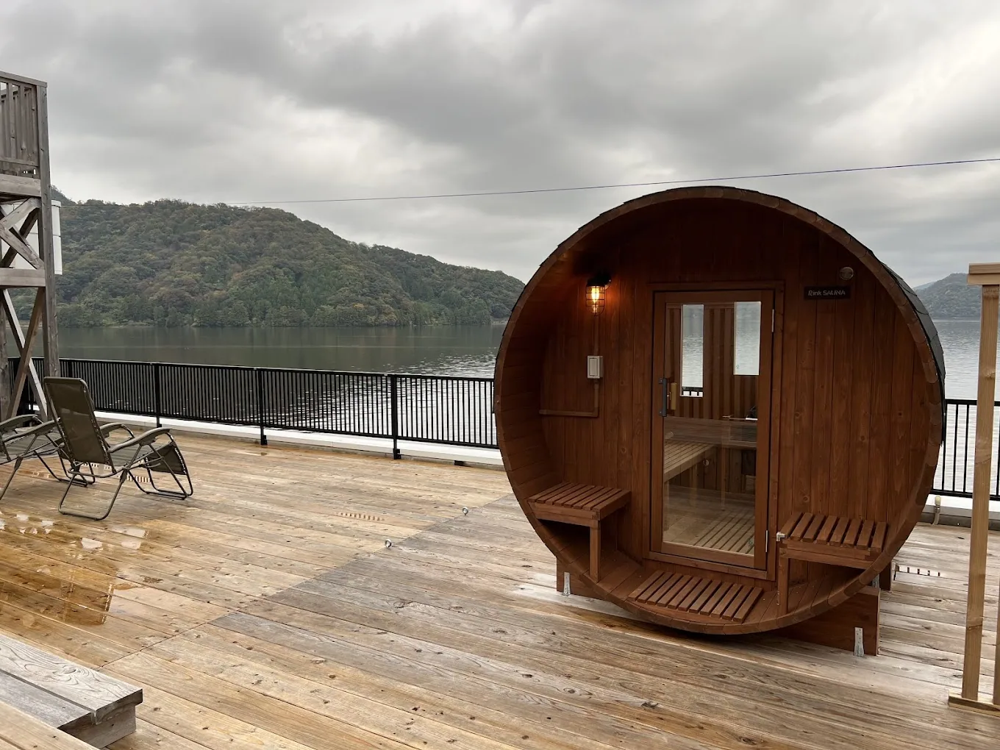
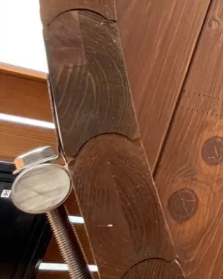
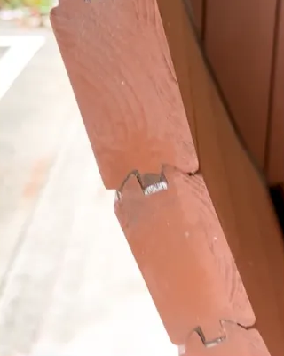
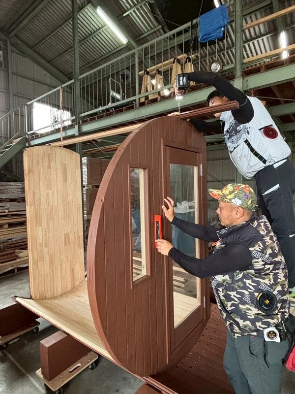
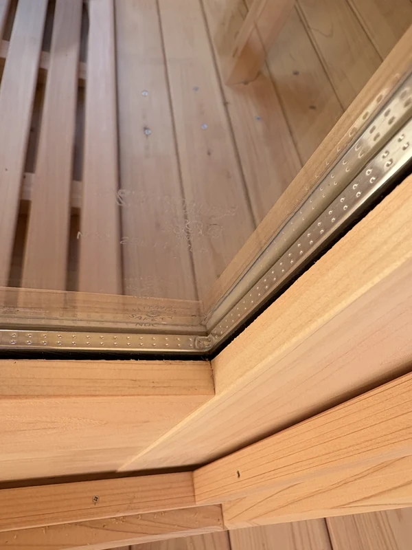
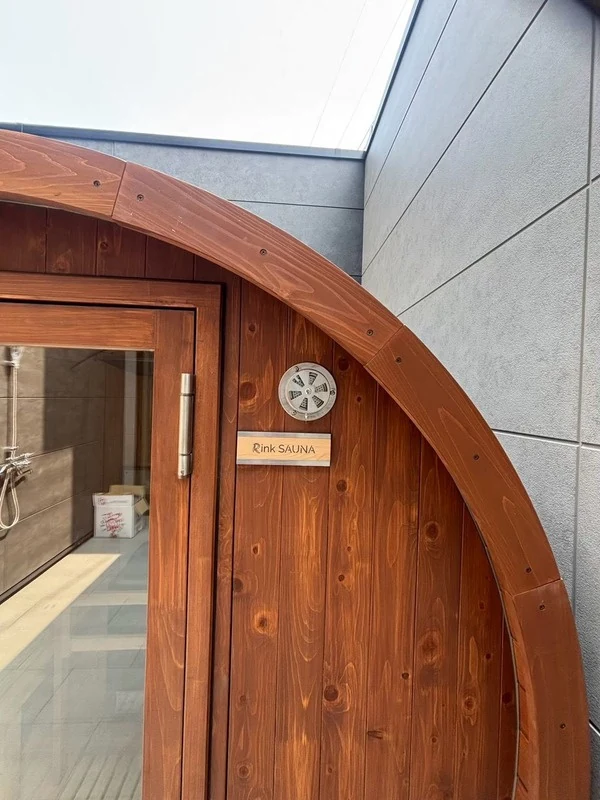

WHY Rink SAUNA
この楽しみを、
長く。
国産ヒノキの心地よさを、確かな構造とサポートで。
Rink SAUNAを選ぶ、5つの理由。

WHY Rink SAUNA 5 REASONS
選ぶ理由を、その先の楽しみに。
心地よい一回を、何度でも。
素材と構造、つくり方とサポート。
Rinkが大切にする、5つのこと。
01 / JAPANESE HINOKI
国産ヒノキの、心地よさ。
香りも、肌触りも、木目も。
サウナの時間をつくる素材から選びます。

HINOKI / 上小節
木に、包まれる。
扉を開けたときに広がる香り。素肌にふれるやさしい質感。小さな節の少ない「上小節」の国産ヒノキを使い、木の表情を感じられるサウナに仕上げます。
木材の調達から製造まで、自分たちの目で素材に向き合う。使い続けるほどに愛着が生まれる一台を目指しています。

02 / EXPERIENCE
サウナの楽しみを、全国へ。
年間150台の販売実績
全国の配送・設置に対応。
宿泊施設、キャンプ場、自宅や別荘。
さまざまな場所で、Rinkのサウナが使われています。

特許技術 MITSUNA STRUCTURE
熱を逃がしにくい。その違いは、継ぎ目に。
Mitsunaミツナ構造
丸い側壁をつくる、木の継ぎ目。
独自の突起と溝がかみ合い、
サウナ室内の熱と湿度を保ちやすくします。


写真中央の、板同士のかみ合い方を見比べてください。
04 / DURABILITY
特殊乾燥と、三重積層。
天然木が伸び縮みすることを前提に。
乾燥と加工の技術で、長く使うための土台をつくります。

02 / LAMINATION
前後の壁は、三層のヒノキ。
入口を囲む前壁と奥の後壁は、ヒノキを三層に重ねた材を採用。厚みをもたせることで、木の反りや割れを抑えます。
前壁・後壁の厚さ60mm
前壁・後壁の構成イメージ。各層の厚みの比率を示すものではありません。
天然木の状態を保つには、適切な使用と日頃のお手入れが必要です。
MADE BY Rink
自社一貫の
ものづくり。
国内のヒノキ材を直接調達し、国内自社工場で製造。配送から現地施工までを一貫して担い、工程ごとの品質を自社で管理しています。
- 01
ヒノキを仕入れる
国内の産地から、ヒノキ材を直接調達します。
- 02
部材をつくる
国内の自社工場で、壁やベンチの部材を加工します。
- 03
現地へ届ける
できあがった部材を、設置場所まで自社で配送します。
- 04
一台を組み上げる
自社スタッフが現地で組み立て、施工を担当します。
配送・施工費は、設置条件に合わせて個別にお見積もりします。

CRAFTED WITH CARE
機械で整え、
手で仕上げる。
設計から製材、乾燥、加工まで。木材の膨張や収縮を踏まえ、安定性と品質を追求してきました。
モルダー加工機で材を整え、扉・壁・ベンチ・すのこ・土台には手作業で細かな加工を重ねる。部材ごとの工程に、木材加工の経験を活かしています。
つくり手の話を読むDOOR & GLASS
窓と扉にも、熱を保つ工夫。
継ぎ目だけでなく、景色を眺める窓にも、
出入りする扉にも、心地よさのための設計を。

PAIR GLASS
複層強化ガラス
2枚のガラスの間の空気層が、窓を通した熱の移動を抑えます。外の景色を楽しみながら、室内の暖かさを保ちやすくします。
複層ガラスの断面イメージ。大窓・横長窓・縦長窓に採用。半円パノラマ窓は強化ガラスです。
窓の種類を見るSELF-CLOSING DOOR
自動ドアクローズ機能
ばね入りの蝶番で、手を離すと扉が自然に閉まる仕組み。半開きや閉め忘れによる熱の逃げを抑えます。
小さな金具にも、心地よさを保つ役割。
OUR COMMITMENT
10年保証
対象部材の保証 ＋ 初年度1年の保守
保証規程に沿って使用・管理されている対象製品の、最初の購入者さまに適用されます。初年度の無償訪問は1台につき2回まで。地域・施工内容等により別途費用がかかります。
2年目以降の工賃・出張費・送料等は有料です。ストーブ・チラー・電装品等は各メーカー保証。日常のお手入れ・定期清掃・点検の無償提供は含みません。

Rink SAUNA ご相談窓口
その場所に、
つづく楽しみを。
設置場所や使い方から、一緒に考えます。